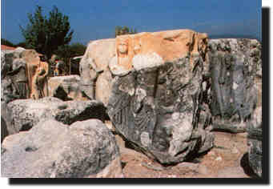

|

Herakleia Salbace |
Kent Denizli ili, Tavas ilçesinin 10 km kuzeybatýsýnda bulunan Vakýf köyü
sýnýrlarý içindedir. Yerleþim daha çok kuzeydeki sur ile çevrili bölgede
yoðunluk kazanmaktadýr. Heracleia Salbace, antik coðrafyada belirtilen
Caria ile Phrigya bölgelerini ayýran Babadað(Salbace) sýra daðlarýnýn
güneyindeki bugünkü Tavas ovasýna bakan eteklerinde yer almaktadýr. Caria
kenti olarak bilinir.
|
Heracleia ile Aphrodisias'ý küçük Tmelos'a (Kýrpýnar)
çayý doðal sýnýr olarak ayýrmaktadýr.
Her iki kentin de Nehir Tanrýsý Tmelos'tur
Heracleia; batýsýnda Aphrodisias, güneyinde Apollonia ve Tabae, güneydoðusunda
Sebastopolis ve Kidrama ile yakýn ve çaðdaþ kentler durumundadýr. Önemli
yapýlarý, kenti çevreleyen Roma dönemi suru ve stadyumdur.
Stadyum:Antik kenti çevreleyen sur ile bugünkü Vakýf köyünün arasýndadýr.
Doðu-batý yönünde olan stadyuma ait, yamaçlarda bazý basamaklar görülmektedir.
Batý kýsmýndaki basamaklar ise tamamen tahrip olmuþtur.
Heracleia Hieronu:Heracleia Salbace antik kentinin yaklaþýk 4 km doðusunda,
bugünkü Tavas-Kýzýlcabölük kasabasýnýn 1 km kuzeydoðusunda, Ören Sýrtý ve
Kocapýnar mevkii diye adlandýrýlan yerdedir. Salbacos (Babadað) daðýnýn
sýrtýnda yer alan Hieron dikdörtgen prizma þeklindedir. Dört tarafýný
plakalardan oluþan kabartmalar çevirir. Kabartmalarda; Armetis, Apollon,
Pan, Dionysos ve Herakles ile ilgili mitolojik sahneler iþlenmiþtir.
|